UE24CS352A Machine Learning · Hackathon technical report
Team PathSnap
Final system: candidate generation (50 m) → tuned LightGBM candidate classifier → HMM / Viterbi decoding over road-network distances → connected route, served by a FastAPI backend and a browser UI.
All numbers are generated from results/ by the scripts in the repository (run_pipeline.sh). Partitions: train = 80 trips (fitting, CV, tuning),
student_test = 10 trips (development comparison). Evaluator-testing data was never read during development.
Each trip folder contains four header-less whitespace files: .track (lon, lat, t [s]), .nodes (lon, lat; row = node id),
.arcs (from, to; row = directed arc id) and .route (chronological arc ids). Every trip ships its own road-network
excerpt (median 9608 nodes / 19526 directed arcs on train, up to 307,392 arcs). Trips are spread over
several continents (Fig. 2.4), so all geometry is computed in a per-trip local metric projection.
| Partition (analysis) | Trips | GPS fixes | Fixes / trip (median, min–max) | NaN values | Share of 1 s steps | Trips with gap > 30 s | Max gap | Two-way arc share | Trips w/ disconnected ref. route |
|---|---|---|---|---|---|---|---|---|---|
| train | 80 | 208,417 | 1529 (361–19313) | 0 | 93.8% | 28 | 153,064 s | 92.2% | 10 |
| student_test | 10 | 19,160 | 1420 (262–3958) | 0 | 98.2% | 2 | 210 s | 92.7% | 1 |
pathsnap/data_io.py): non-finite or out-of-range coordinates and (0,0) fixes are dropped; fixes are sorted by
timestamp and duplicate timestamps removed. On this data no fix needed removal (0 NaNs, 0 invalid, 0 duplicates, 0 out-of-order), but the checks protect the API against bad evaluator files.pathsnap/geo.py): lon/lat are angular, so each trip is projected to a local equirectangular plane (metres) centred on the trip median;
over the largest trip extent the distortion is < 0.1 %, far below GPS noise, and it keeps all distance computations vectorised.pathsnap/labeling.py): the route file gives the traversed arcs but not which arc each fix belongs to. We align fixes
to route positions with a monotone dynamic programme (position non-decreasing in time, minimum total point-to-arc distance), which handles loops and revisited arcs.pathsnap/features.py): every directed arc within 50 m of a fix (STR-tree query), at most 12 nearest;
fixes with none fall back to the 3 nearest arcs. Candidate miss rate (reference arc not in the set): 1.40% (train, reliable fixes) and 0.12% (student-test).| Feature group | Features | Why |
|---|---|---|
| Proximity | dist, dist_rank, dist_minus_min, dist_ratio, gauss_share | GPS noise is roughly Gaussian around the true road; relative measures make the score comparable across dense and sparse networks. |
| Direction | heading_cos, heading_absdiff, speed, heading_valid | Separates the two directions of a two-way road and crossing streets; heading is only trusted when moving (> 1 m/s). |
| Geometry | arc_length, proj_t, proj_inside | Fixes projecting beyond an arc's end usually belong to the next arc. |
| Ambiguity | n_cands, n_within_20 | How crowded the neighbourhood is (intersection vs open road). |
| Temporal context (±3 fixes) | ctx_mean_dist, ctx_max_dist, ctx_rank, ctx_minus_min, ctx_heading_cos | The true arc should explain the neighbouring fixes too, which removes many single-fix ambiguities. |
| Topology | from_in_deg, to_out_deg, has_reverse | Junction complexity and one-way information. |
| Timing | dt_prev, dt_next | Flags fixes adjacent to gaps. |
Top-10 features of the final tuned model by gain:
| Feature | Gain share |
|---|---|
| dist_minus_min | 0.267 |
| ctx_heading_cos | 0.205 |
| ctx_minus_min | 0.190 |
| heading_cos | 0.060 |
| dist_rank | 0.059 |
| heading_absdiff | 0.038 |
| ctx_rank | 0.035 |
| proj_inside | 0.030 |
| arc_length | 0.020 |
| proj_t | 0.019 |
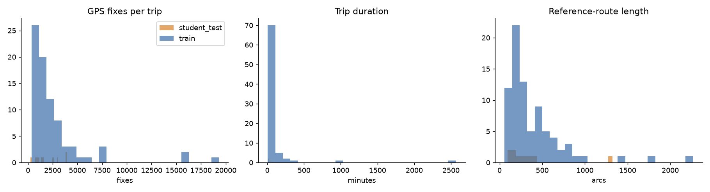
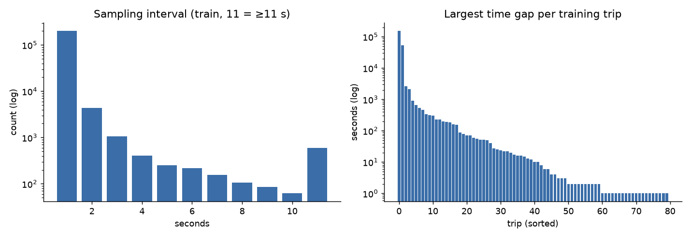
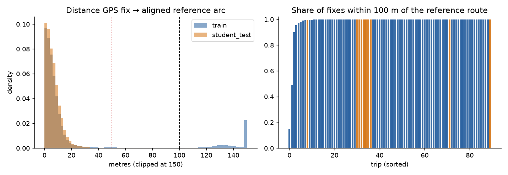
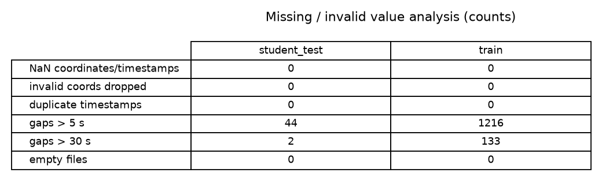
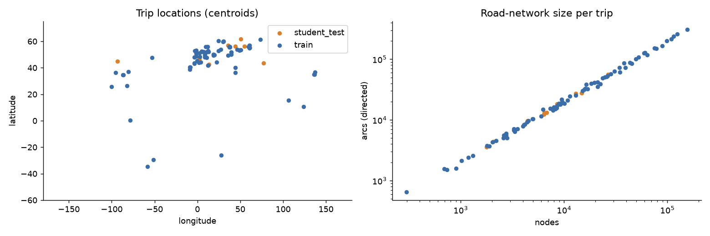
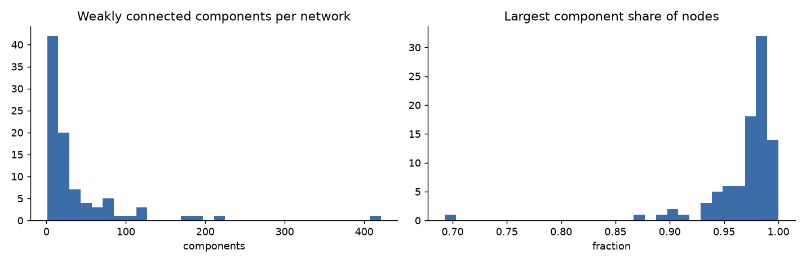
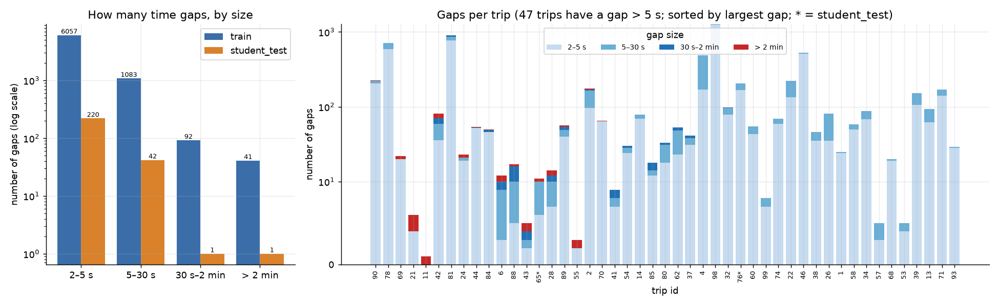
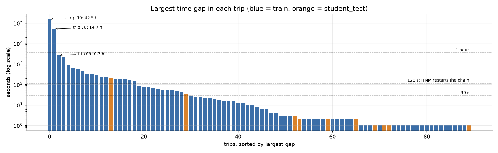
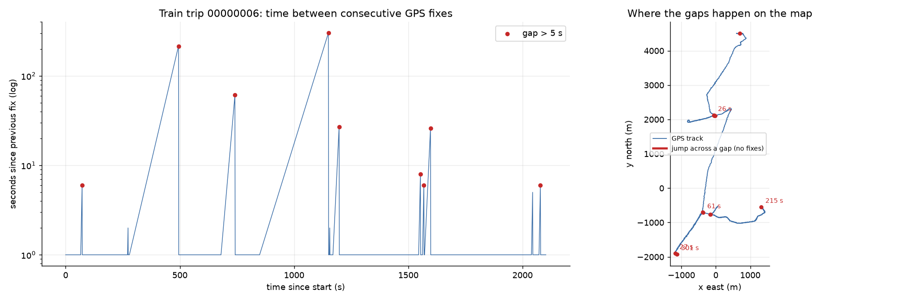
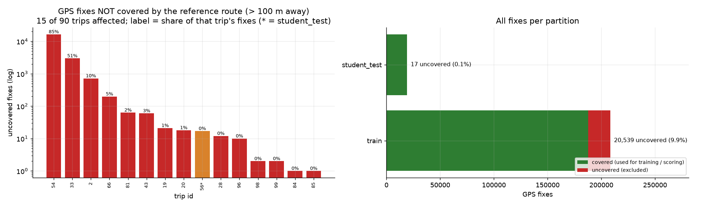
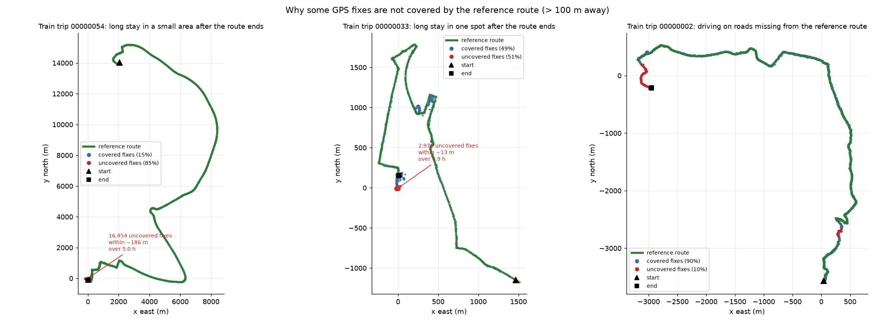
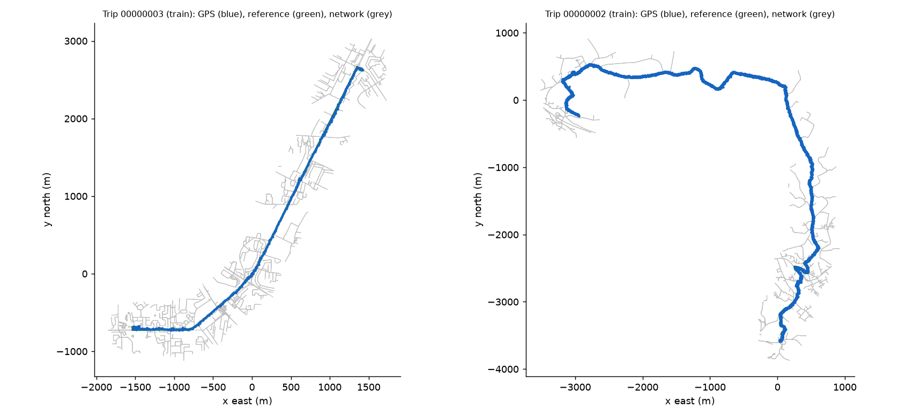
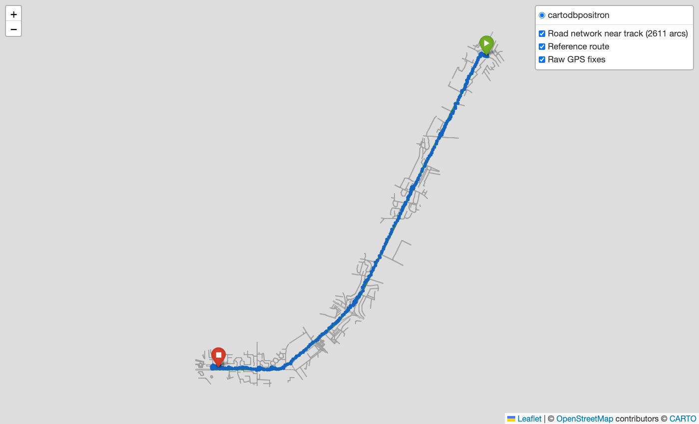
results/maps/eda_train_00000003.html.Task framing. For each (fix, candidate arc) pair a binary classifier predicts P(candidate is the reference arc). Observation-level Top-1 picks the highest-probability candidate per fix. Protocol: 5-fold GroupKFold over the 80 training trips (trips never split across folds), refit on all 80 trips, evaluated on the 10 student-test trips. Macro-F1 is computed on candidate rows at threshold 0.5 (macro over the two classes); log loss on candidate rows; Top-1 over reliable fixes (a fix whose reference arc is missing from the candidates counts as an error). Route continuity = share of changes of matched arc that are drivable within 100 m along the directed network. Seeds fixed at 42.
Primary selection metric: student-test/CV Top-1 accuracy together with log loss: Top-1 is the route-matching objective itself, and the log loss measures probability quality, which matters because the probabilities become HMM emission scores. CV macro-F1 was used as the Bayesian-optimisation objective and as a stability check.
| Model | Algorithm family | Key configuration | CV Macro F1 (mean ± sd) | Top-1 Accuracy (student-test) | Route continuity (classifier only → +HMM) | Student-Test Macro F1 | Log Loss (student-test) | Inference time (ms / 1k fixes) |
|---|---|---|---|---|---|---|---|---|
| Model 1: LogisticRegression | Linear | L2, C=1.0, standardised | 0.9315 ± 0.0139 | 0.8894 | 0.939 → 0.998 | 0.9315 | 0.0838 | 0.2 |
| Model 2: GaussianNB | Probabilistic | var_smoothing=1e-9 | 0.8337 ± 0.0134 | 0.8352 | 0.909 → 0.998 | 0.8353 | 0.7359 | 0.4 |
| Model 3: KNN | Instance-based | k=25, distance-weighted, standardised, 60k-row reference set | 0.9269 ± 0.0144 | 0.8805 | 0.914 → 0.998 | 0.9269 | 0.1032 | 143.2 |
| Model 4: DecisionTree | Tree | max_depth=12, min_samples_leaf=20 | 0.9289 ± 0.0144 | 0.8881 | 0.922 → 0.998 | 0.9303 | 0.0955 | 0.3 |
| Model 5: RandomForest | Ensemble (bagging) | 150 trees, min_samples_leaf=5, sqrt features | 0.9375 ± 0.0133 | 0.8930 | 0.945 → 0.998 | 0.9360 | 0.0705 | 9.4 |
| Model 6: LightGBM | Boosting | 400 trees, lr=0.05, 63 leaves | 0.9367 ± 0.0143 | 0.9033 | 0.944 → 0.998 | 0.9404 | 0.0666 | 16.5 |
| Model 7: XGBoost | Boosting | 400 trees, lr=0.05, depth=7 | 0.9370 ± 0.0140 | 0.9002 | 0.942 → 0.998 | 0.9390 | 0.0668 | 5.7 |
| Model 8: MLP | Neural network | 64-32 ReLU, adam, early stopping | 0.9320 ± 0.0135 | 0.8931 | 0.944 → 0.998 | 0.9312 | 0.0761 | 0.8 |
Supplementary metrics (same runs):
| Model | CV Top-1 | CV log loss | Test precision (macro) | Test recall (macro) | Train macro F1 (refit) | Fit time (s, full train) | Top-1 after HMM | Route F1 after HMM |
|---|---|---|---|---|---|---|---|---|
| LogisticRegression | 0.8830 | 0.0932 | 0.9312 | 0.9319 | 0.9318 | 0.2 | 0.9255 | 0.9849 |
| GaussianNB | 0.8294 | 0.7921 | 0.7903 | 0.9240 | 0.8334 | 0.0 | 0.9148 | 0.9767 |
| KNN | 0.8707 | 0.1251 | 0.9309 | 0.9230 | 1.0000 | 0.0 | 0.9156 | 0.9822 |
| DecisionTree | 0.8791 | 0.1132 | 0.9321 | 0.9286 | 0.9469 | 4.1 | 0.9154 | 0.9833 |
| RandomForest | 0.8886 | 0.0790 | 0.9428 | 0.9295 | 0.9723 | 16.7 | 0.9161 | 0.9842 |
| LightGBM | 0.8881 | 0.0767 | 0.9449 | 0.9360 | 0.9684 | 12.0 | 0.9223 | 0.9851 |
| XGBoost | 0.8880 | 0.0760 | 0.9443 | 0.9339 | 0.9665 | 7.6 | 0.9207 | 0.9849 |
| MLP | 0.8839 | 0.0858 | 0.9322 | 0.9302 | 0.9489 | 9.1 | 0.9212 | 0.9860 |
Model selection. The three tree ensembles are statistically tied on CV macro-F1 (differences ≪ fold s.d. of ~0.014). LightGBM has the best student-test Top-1 (0.9033) and the lowest log loss (0.0666), i.e. the best probabilities for the HMM, trains in seconds, and is compatible with the decoder; Random Forest is a close second but has a larger artifact and higher log loss; KNN is ~10× slower at inference; Naive Bayes is poorly calibrated. LightGBM was therefore selected for Bayesian optimisation.
A1. Why suitable?
A linear log-odds model over standardised candidate features is the natural baseline for a binary 'is this the true arc?' decision: most of the signal (distance, heading agreement, context distance) is monotone, and logistic regression yields calibrated probabilities that can be fed directly into the HMM as emission scores.
A2. Strengths and limitations
Strengths: Very fast to fit (<1 s) and to score, well-calibrated probabilities, interpretable coefficients. Limitations: Cannot model interactions such as 'heading only matters when the vehicle is moving' or the non-linear effect of distance rank, so it saturates below the tree ensembles.
B5. Important hyperparameters (initial values)
C = 1.0 (inverse L2 strength), max_iter = 2000, lbfgs solver; features standardised (StandardScaler fitted on training folds only).
B6. Loss / objective
Binary cross-entropy (log loss) + L2 penalty.
C7–C8. Student-testing performance (observation level)
Top-1 accuracy 0.8894, macro-F1 0.9315 (macro precision 0.9312, macro recall 0.9319), log loss 0.0838. CV macro-F1 0.9315 ± 0.0139 (folds: 0.915, 0.937, 0.951, 0.931, 0.923). Feeding its probabilities to the same HMM gives top-1 0.9255 and length-weighted route F1 0.9849. Fit time 0.2 s; inference 0.2 ms per 1,000 fixes.
C9. Over- / underfitting?
No overfitting, mild underfitting. Train (0.9318) ≈ CV (0.9315) ≈ test (0.9315); the linear boundary limits accuracy rather than variance.
A1. Why suitable?
A generative probabilistic model that is extremely cheap and gives class posteriors; useful to test whether per-feature class-conditional densities are enough to separate candidates.
A2. Strengths and limitations
Strengths: Trivial training cost, no hyperparameter tuning, probabilistic output. Limitations: Assumes features are conditionally independent and Gaussian. Our features are strongly correlated (dist, dist_rank, dist_minus_min, ctx_mean_dist all encode proximity) and heavy-tailed, so the model double-counts evidence and produces over-confident probabilities (worst log loss).
B5. Important hyperparameters (initial values)
var_smoothing = 1e-9 (default).
B6. Loss / objective
Maximum-likelihood estimation of per-class Gaussian means/variances (no iterative loss).
C7–C8. Student-testing performance (observation level)
Top-1 accuracy 0.8352, macro-F1 0.8353 (macro precision 0.7903, macro recall 0.9240), log loss 0.7359. CV macro-F1 0.8337 ± 0.0134 (folds: 0.829, 0.838, 0.848, 0.841, 0.813). Feeding its probabilities to the same HMM gives top-1 0.9148 and length-weighted route F1 0.9767. Fit time 0.0 s; inference 0.4 ms per 1,000 fixes.
C9. Over- / underfitting?
Underfitting. Train macro-F1 (0.8334) is as low as test (0.8353); the model is too simple for the correlated features. Its log loss (0.736) is ~10× worse than the others, showing badly over-confident posteriors.
A1. Why suitable?
Instance-based: a candidate is likely correct if similar (fix, arc) configurations in other trips were correct. Tests whether local similarity in feature space suffices without a parametric form.
A2. Strengths and limitations
Strengths: Non-parametric, captures non-linear boundaries, no training phase. Limitations: Requires feature scaling; prediction cost grows with the reference set (we capped it at 60k rows and it is still by far the slowest model at inference); memorises training rows (train F1 = 1.0 with distance weighting).
B5. Important hyperparameters (initial values)
n_neighbors = 25, weights = 'distance', Euclidean metric on standardised features, 60,000 training rows.
B6. Loss / objective
None (lazy learner); class probability = distance-weighted vote of the 25 neighbours.
C7–C8. Student-testing performance (observation level)
Top-1 accuracy 0.8805, macro-F1 0.9269 (macro precision 0.9309, macro recall 0.9230), log loss 0.1032. CV macro-F1 0.9269 ± 0.0144 (folds: 0.913, 0.933, 0.948, 0.926, 0.914). Feeding its probabilities to the same HMM gives top-1 0.9156 and length-weighted route F1 0.9822. Fit time 0.0 s; inference 143.2 ms per 1,000 fixes.
C9. Over- / underfitting?
Overfitting (memorisation). Train macro-F1 is 1.0000 (distance weighting returns each training row's own label) vs 0.9269 on student-test; nonetheless k = 25 keeps test performance reasonable.
A1. Why suitable?
Map-matching rules are naturally hierarchical (e.g. 'if nearest and heading agrees then ...'); a single tree learns such threshold rules and handles mixed-scale features without scaling.
A2. Strengths and limitations
Strengths: Interpretable, captures interactions, fast inference. Limitations: High variance: a single tree's probabilities are piecewise-constant and less calibrated, and deeper trees overfit quickly.
B5. Important hyperparameters (initial values)
max_depth = 12, min_samples_leaf = 20, criterion = gini.
B6. Loss / objective
Greedy minimisation of Gini impurity.
C7–C8. Student-testing performance (observation level)
Top-1 accuracy 0.8881, macro-F1 0.9303 (macro precision 0.9321, macro recall 0.9286), log loss 0.0955. CV macro-F1 0.9289 ± 0.0144 (folds: 0.915, 0.937, 0.950, 0.921, 0.922). Feeding its probabilities to the same HMM gives top-1 0.9154 and length-weighted route F1 0.9833. Fit time 4.1 s; inference 0.3 ms per 1,000 fixes.
C9. Over- / underfitting?
Mild overfitting. Train macro-F1 0.9469 vs CV 0.9289 vs test 0.9303 (train–test gap 0.017).
A1. Why suitable?
Bagging many de-correlated trees reduces the variance of the single tree while keeping its ability to model feature interactions, and produces smoother probability estimates.
A2. Strengths and limitations
Strengths: Robust, little tuning, good generalisation and stable across folds. Limitations: Large model on disk, slower to train than boosting at similar accuracy, probability estimates slightly less sharp than boosting (higher log loss).
B5. Important hyperparameters (initial values)
n_estimators = 150, max_features = 'sqrt', min_samples_leaf = 5, bootstrap = True.
B6. Loss / objective
Gini impurity per tree; probabilities averaged over trees.
C7–C8. Student-testing performance (observation level)
Top-1 accuracy 0.8930, macro-F1 0.9360 (macro precision 0.9428, macro recall 0.9295), log loss 0.0705. CV macro-F1 0.9375 ± 0.0133 (folds: 0.922, 0.941, 0.958, 0.936, 0.931). Feeding its probabilities to the same HMM gives top-1 0.9161 and length-weighted route F1 0.9842. Fit time 16.7 s; inference 9.4 ms per 1,000 fixes.
C9. Over- / underfitting?
Mild overfitting. Train macro-F1 0.9723 vs CV 0.9375 vs test 0.9360 (train–test gap 0.036).
A1. Why suitable?
Gradient-boosted trees fit residual errors sequentially and are state of the art on tabular data with heterogeneous features like ours; leaf-wise growth and histogram binning make training on ~440k candidate rows fast, and the log-loss objective yields good probabilities for the HMM.
A2. Strengths and limitations
Strengths: Best student-test top-1 accuracy and log loss among the untuned models, fast training, handles unscaled and interacting features, native feature importance. Limitations: More hyperparameters to tune; can overfit with many rounds (validation log loss bottoms out around round 128 and rises slightly afterwards).
B5. Important hyperparameters (initial values)
n_estimators = 400, learning_rate = 0.05, num_leaves = 63, subsample = 0.8, colsample_bytree = 0.8, min_child_samples = 20.
B6. Loss / objective
Binary log loss (gradient boosting with second-order approximation).
C7–C8. Student-testing performance (observation level)
Top-1 accuracy 0.9033, macro-F1 0.9404 (macro precision 0.9449, macro recall 0.9360), log loss 0.0666. CV macro-F1 0.9367 ± 0.0143 (folds: 0.917, 0.942, 0.957, 0.934, 0.933). Feeding its probabilities to the same HMM gives top-1 0.9223 and length-weighted route F1 0.9851. Fit time 12.0 s; inference 16.5 ms per 1,000 fixes.
C9. Over- / underfitting?
Mild overfitting. Train macro-F1 0.9684 vs test 0.9404 (gap 0.028). The boosting history (Fig. 3.3e) shows the held-out log loss is minimal around round 128 and creeps up afterwards while training loss keeps falling — which motivated tuning the number of rounds, learning rate and regularisation in Section 4.
A1. Why suitable?
A second boosting implementation (level-wise trees, different regularisation) to check whether the boosting result is implementation-specific.
A2. Strengths and limitations
Strengths: Accuracy on par with LightGBM, explicit L1/L2 regularisation, fast hist training. Limitations: Slightly worse student-test top-1 than LightGBM; same overfitting tendency with many rounds (validation minimum around round 136).
B5. Important hyperparameters (initial values)
n_estimators = 400, learning_rate = 0.05, max_depth = 7, subsample = 0.8, colsample_bytree = 0.8, tree_method = hist.
B6. Loss / objective
Binary log loss (logistic objective) with L2 regularisation.
C7–C8. Student-testing performance (observation level)
Top-1 accuracy 0.9002, macro-F1 0.9390 (macro precision 0.9443, macro recall 0.9339), log loss 0.0668. CV macro-F1 0.9370 ± 0.0140 (folds: 0.919, 0.941, 0.958, 0.935, 0.933). Feeding its probabilities to the same HMM gives top-1 0.9207 and length-weighted route F1 0.9849. Fit time 7.6 s; inference 5.7 ms per 1,000 fixes.
C9. Over- / underfitting?
Mild overfitting. Train macro-F1 0.9665 vs test 0.9390 (gap 0.028). The boosting history (Fig. 3.3e) shows the held-out log loss is minimal around round 136 and creeps up afterwards while training loss keeps falling — which motivated tuning the number of rounds, learning rate and regularisation in Section 4.
A1. Why suitable?
A neural network learns non-linear feature combinations end-to-end and outputs probabilities; tests whether a smooth function approximator beats tree ensembles on this tabular problem.
A2. Strengths and limitations
Strengths: Smooth decision boundaries, fast inference, produces a genuine epoch-wise training history. Limitations: Needs scaling and early stopping; on tabular data with thresholds (degree counts, ranks) it is less accurate than boosting and less stable to train.
B5. Important hyperparameters (initial values)
hidden layers (64, 32), ReLU, Adam (lr 1e-3), batch 512, alpha (L2) = 1e-4, early stopping on 10% validation, patience 6, max 60 epochs.
B6. Loss / objective
Binary cross-entropy + L2 weight penalty.
C7–C8. Student-testing performance (observation level)
Top-1 accuracy 0.8931, macro-F1 0.9312 (macro precision 0.9322, macro recall 0.9302), log loss 0.0761. CV macro-F1 0.9320 ± 0.0135 (folds: 0.917, 0.937, 0.952, 0.930, 0.924). Feeding its probabilities to the same HMM gives top-1 0.9212 and length-weighted route F1 0.9860. Fit time 9.1 s; inference 0.8 ms per 1,000 fixes.
C9. Over- / underfitting?
Slight overfitting, controlled by early stopping. Train 0.9489 vs test 0.9312; training stopped after 37 epochs when the validation accuracy stopped improving (Fig. 3.3e).
First evaluation: the 5 presented models, one per algorithm family (Figs. 3.3-i to 3.3-iii). The figures after them show all 8 models.
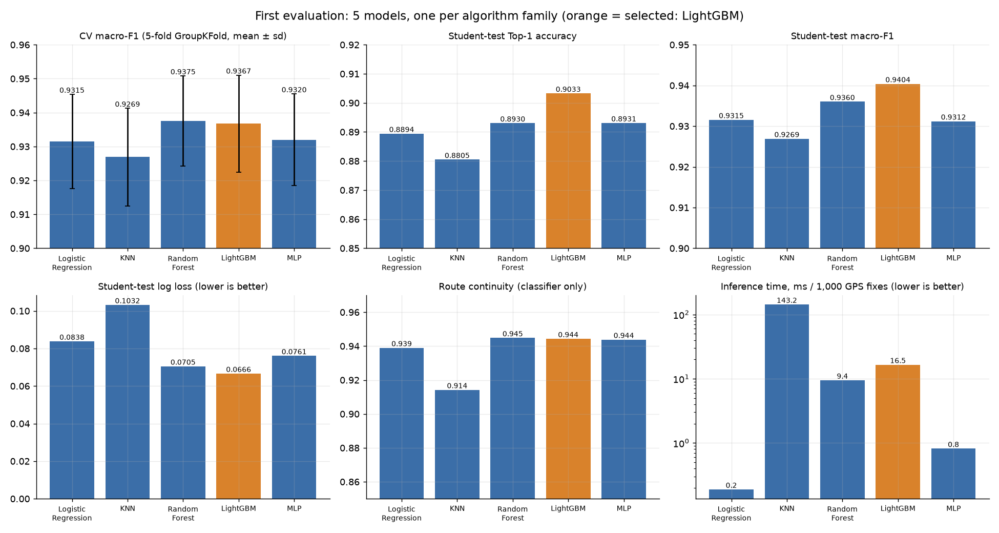
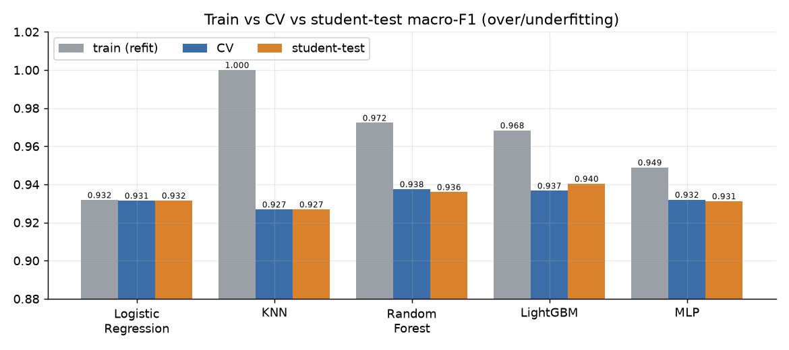
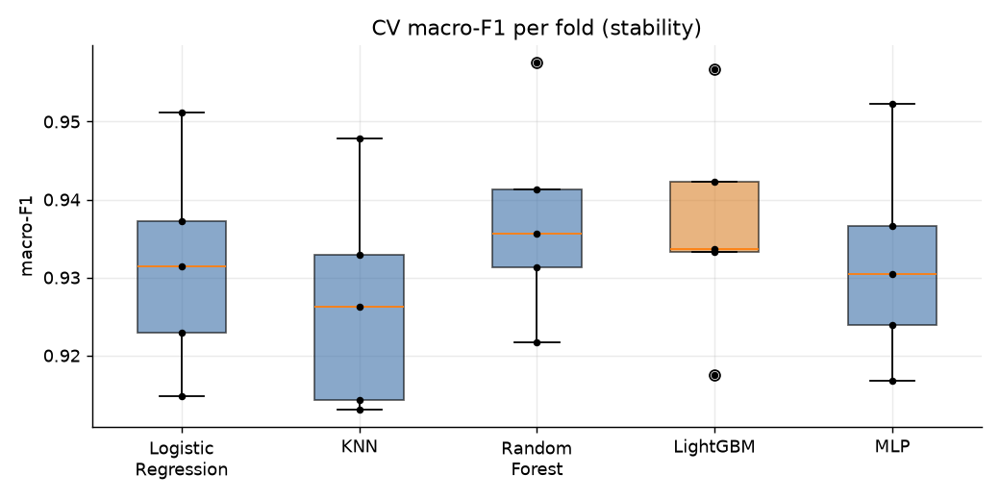
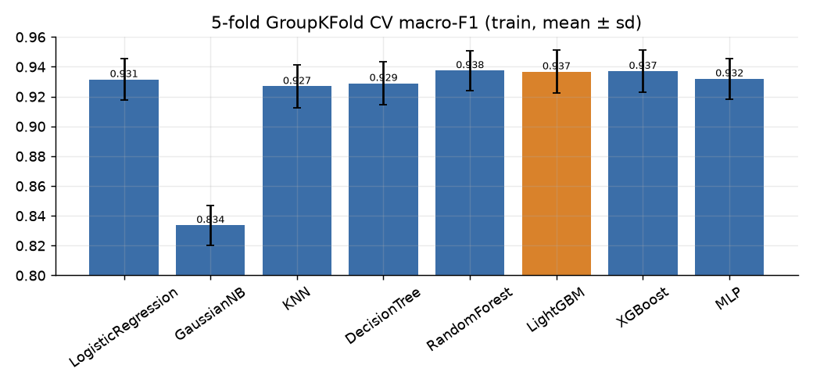
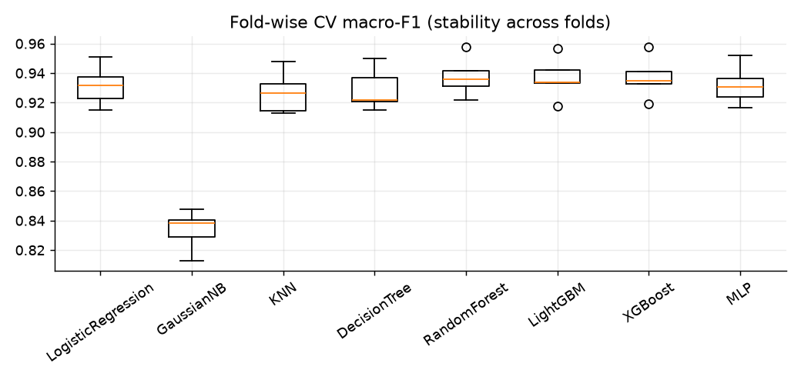
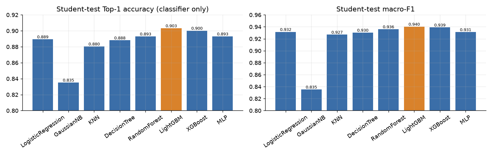
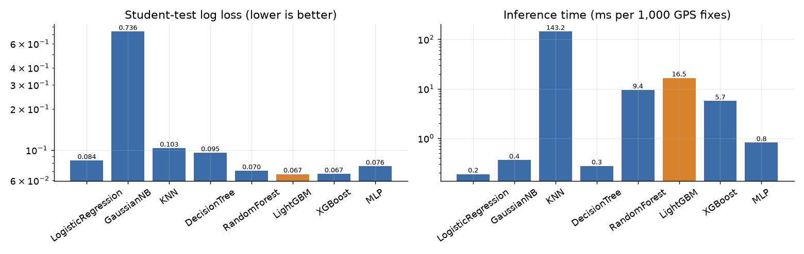
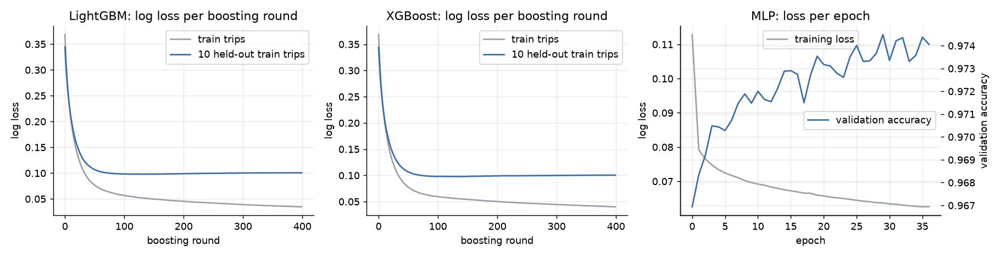
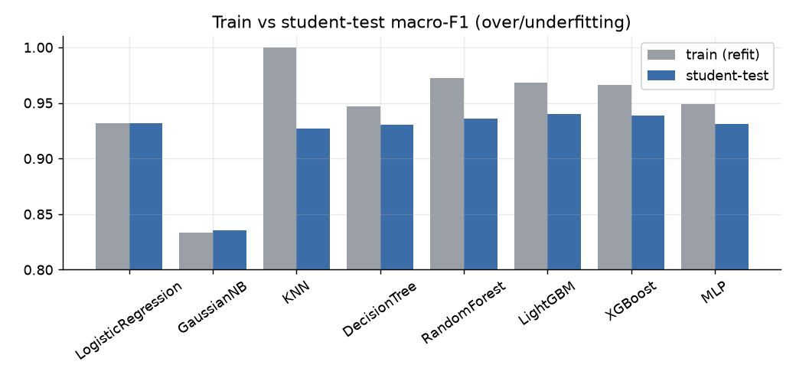
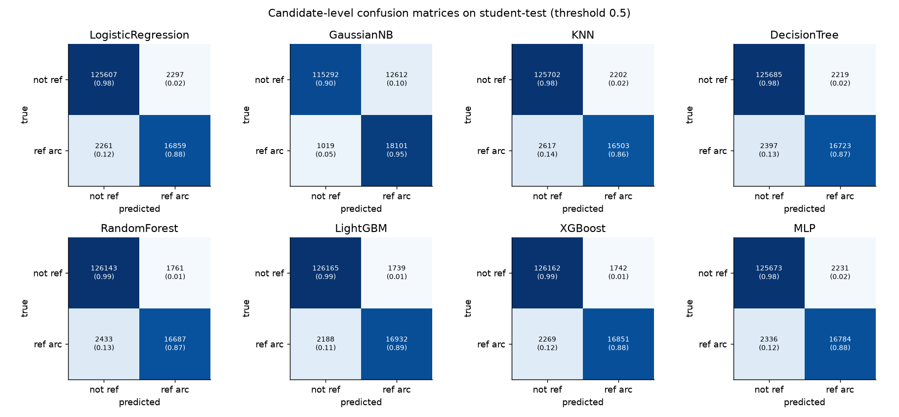
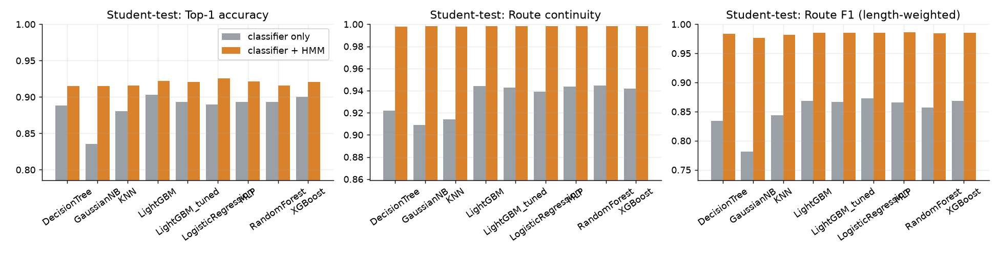
results/optuna_trials.csv, results/optuna.db.| Hyperparameter | Distribution | Range | Initial (untuned) | Best found |
|---|---|---|---|---|
| n_estimators | uniform int | [100, 800] | 400.00 | 261 |
| learning_rate | log-uniform | [0.01, 0.2] | 0.05 | 0.0259 |
| num_leaves | log-uniform int | [15, 255] | 63.00 | 91 |
| min_child_samples | log-uniform int | [5, 300] | 20.00 | 21 |
| subsample | uniform | [0.5, 1.0] | 0.80 | 0.9254 |
| colsample_bytree | uniform | [0.4, 1.0] | 0.80 | 0.5676 |
| reg_lambda | log-uniform | [0.001, 10.0] | 0.00 | 0.001527 |
| reg_alpha | log-uniform | [0.001, 10.0] | 0.00 | 0.01477 |
| Model | CV Macro F1 | Student-test Top-1 | Student-test Macro F1 | Log Loss | Route continuity (clf only) | Inference (ms / 1k fixes) | Fit time (s) |
|---|---|---|---|---|---|---|---|
| LightGBM (untuned) | 0.9367 ± 0.0143 | 0.9033 | 0.9404 | 0.0666 | 0.944 | 14.1 | 4.9 |
| LightGBM (tuned) | 0.9379 ± 0.0135 | 0.8934 | 0.9361 | 0.0678 | 0.943 | 11.1 | 5.0 |
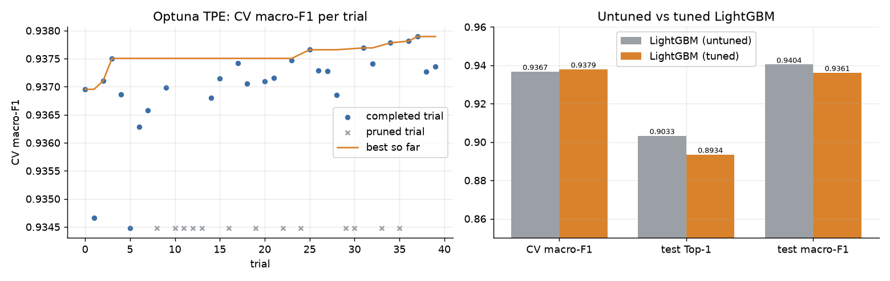
| Trip | Fixes | Top-1 clf | Top-1 clf+HMM | Continuity clf | Continuity HMM | Route F1 clf | Route F1 HMM | Chain breaks | Cand. miss |
|---|---|---|---|---|---|---|---|---|---|
| 00000000 | 2503 | 0.9521 | 0.9648 | 0.897 | 0.990 | 0.9650 | 0.9943 | 2 | 0.12% |
| 00000007 | 1354 | 0.9291 | 0.8907 | 0.990 | 1.000 | 0.9763 | 0.9911 | 1 | 0.00% |
| 00000009 | 1049 | 0.8875 | 0.9056 | 0.973 | 0.997 | 0.8881 | 0.9690 | 1 | 0.57% |
| 00000040 | 2995 | 0.9356 | 0.9492 | 0.952 | 1.000 | 0.9032 | 0.9985 | 1 | 0.00% |
| 00000052 | 262 | 0.9733 | 1.0000 | 0.951 | 1.000 | 0.7925 | 0.9984 | 0 | 0.00% |
| 00000056 | 3958 | 0.9178 | 0.9520 | 0.887 | 0.999 | 0.8661 | 0.9803 | 2 | 0.28% |
| 00000065 | 768 | 0.8763 | 0.8867 | 0.932 | 1.000 | 0.8243 | 0.9834 | 1 | 0.00% |
| 00000076 | 1486 | 0.9280 | 0.9677 | 0.928 | 0.997 | 0.7573 | 0.9799 | 0 | 0.20% |
| 00000077 | 3911 | 0.7691 | 0.8351 | 0.974 | 1.000 | 0.8568 | 0.9794 | 2 | 0.00% |
| 00000091 | 874 | 0.9119 | 0.9348 | 0.944 | 1.000 | 0.8342 | 0.9752 | 1 | 0.00% |
Where the HMM did not help: it lowered Top-1 on 00000007. the smallest gain was on trip 000007.0 (0.9291 → 0.8907). Remaining errors are mostly (i) fixes right at an arc boundary, where the reference label itself is ambiguous (the label alignment and the decoder can legitimately disagree by one short arc), (ii) parallel carriageways of divided roads within GPS noise of each other, and (iii) chain breaks after long gaps, where the decoder restarts and may take a few fixes to recover, and (iv) stationary periods: when the vehicle is stopped, GPS fixes scatter by 10–20 m with random apparent headings; the transition model then sometimes prefers a short detour loop through a side street over staying on the arc (visible in Fig. 6.2). This is also why the reconstructed route's precision is a little lower than its recall. A speed-dependent transition penalty would be the next fix.
| alpha | beta | clf_top1 | hmm_top1 | hmm_continuity | hmm_route_f1 |
|---|---|---|---|---|---|
| 1.0 | 2.0 | 0.9128 | 0.9442 | 0.9978 | 0.9754 |
| 0.5 | 5.0 | 0.9128 | 0.9439 | 0.9978 | 0.9754 |
| 0.5 | 2.0 | 0.9128 | 0.9436 | 0.9977 | 0.9761 |
| 2.0 | 2.0 | 0.9128 | 0.9431 | 0.9976 | 0.9748 |
| 0.5 | 10.0 | 0.9128 | 0.9422 | 0.9975 | 0.9742 |
| 1.0 | 5.0 | 0.9128 | 0.9422 | 0.9975 | 0.9742 |
| 0.5 | 20.0 | 0.9128 | 0.9396 | 0.9973 | 0.9727 |
| 1.0 | 10.0 | 0.9128 | 0.9396 | 0.9973 | 0.9727 |
| 2.0 | 5.0 | 0.9128 | 0.9396 | 0.9973 | 0.9727 |
| 1.0 | 20.0 | 0.9128 | 0.9386 | 0.9973 | 0.9708 |
| 2.0 | 10.0 | 0.9128 | 0.9386 | 0.9973 | 0.9708 |
| 2.0 | 20.0 | 0.9128 | 0.9364 | 0.9973 | 0.9684 |
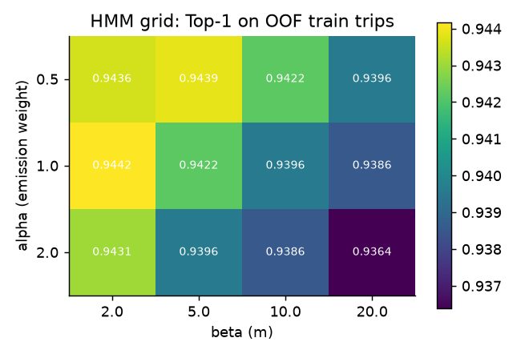
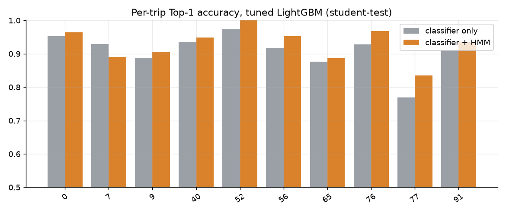
Generated by scripts/make_maps.py from the deployed pipeline for every student-test trip (results/maps/student_test_*.html). Layers (toggleable via the layer control):
road network (grey), raw GPS fixes (blue dots), reference route (green, wide), classifier-only matches (purple dashed, off by default) and HMM-predicted route (orange-red); legend bottom-left; map fitted to the trip extent.
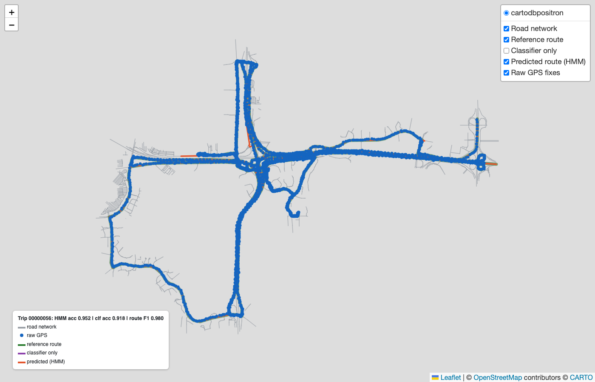
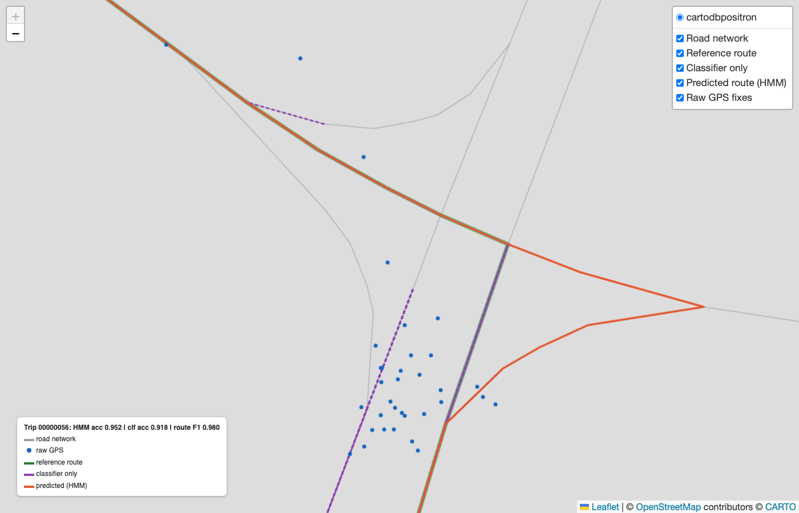
Laptop 1 runs uvicorn api.main:app --host 0.0.0.0 --port 8000 with PATHSNAP_EVAL_DIR pointing at the evaluator trips. Endpoints: GET /health,
GET /trips (the ten evaluation trip ids), POST /predict {"trip_id"} (runs preprocessing → candidates → LightGBM → Viterbi → route, then scores against
the server-side reference route). The prediction function never receives the route file; the response contains only the GPS fixes, nearby road network,
predicted routes and aggregate metrics — no reference arcs or geometry. Every request is logged on the API console with trip id, accuracy, route F1 and latency.
Laptop 2 serves the static UI (python -m http.server 5500 in ui/) and points it to Laptop 1's IP.
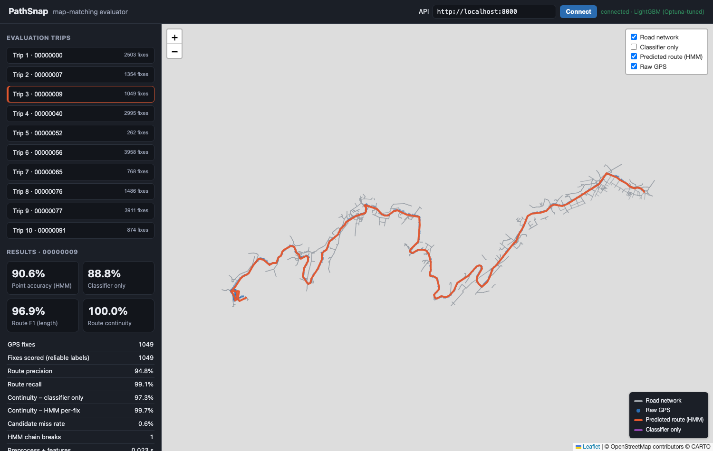
API console log (captured during the development run on student-test trips; replace with the screenshot from Laptop 1 at the evaluation):
2026-11-18 10:45:14,156 | INFO | Loaded model: LightGBM (Optuna-tuned) | HMM: {'alpha': 1.0, 'beta': 2.0, 'topk': 8, 'back_tol': 15.0, 'limit_base': 100.0, 'limit_gc': 2.0, 'limit_dt': 5.0, 'limit_max': 5000.0, 'max_gap_s': 120.0}
2026-11-18 10:45:14,156 | INFO | Serving evaluation trips from /Users/rohitsmac/hackathon/Student folder/student_test
2026-11-18 10:45:19,355 | INFO | GET /trips -> 10 trips
INFO: 127.0.0.1:49963 - "GET /trips HTTP/1.1" 200 OK
2026-11-18 10:45:19,722 | INFO | POST /predict trip=00000000 : 2503 fixes | accuracy clf=0.9521 hmm=0.9648 | route F1=0.9943 | continuity=0.991 | 0.32s
2026-11-18 10:45:19,963 | INFO | POST /predict trip=00000007 : 1354 fixes | accuracy clf=0.9291 hmm=0.8907 | route F1=0.9911 | continuity=1.000 | 0.14s
2026-11-18 10:45:20,380 | INFO | POST /predict trip=00000009 : 1049 fixes | accuracy clf=0.8875 hmm=0.9056 | route F1=0.9690 | continuity=1.000 | 0.38s
2026-11-18 10:45:20,921 | INFO | POST /predict trip=00000040 : 2995 fixes | accuracy clf=0.9356 hmm=0.9492 | route F1=0.9985 | continuity=1.000 | 0.39s
2026-11-18 10:45:21,003 | INFO | POST /predict trip=00000052 : 262 fixes | accuracy clf=0.9733 hmm=1.0000 | route F1=0.9984 | continuity=1.000 | 0.05s
2026-11-18 10:45:22,500 | INFO | POST /predict trip=00000056 : 3958 fixes | accuracy clf=0.9178 hmm=0.9520 | route F1=0.9803 | continuity=0.999 | 1.32s
2026-11-18 10:45:22,815 | INFO | POST /predict trip=00000065 : 768 fixes | accuracy clf=0.8763 hmm=0.8867 | route F1=0.9834 | continuity=1.000 | 0.22s
2026-11-18 10:45:23,861 | INFO | POST /predict trip=00000076 : 1486 fixes | accuracy clf=0.9280 hmm=0.9677 | route F1=0.9799 | continuity=1.000 | 0.99s
2026-11-18 10:45:26,307 | INFO | POST /predict trip=00000077 : 3911 fixes | accuracy clf=0.7691 hmm=0.8351 | route F1=0.9794 | continuity=1.000 | 0.77s
2026-11-18 10:45:26,607 | INFO | POST /predict trip=00000091 : 874 fixes | accuracy clf=0.9119 hmm=0.9348 | route F1=0.9752 | continuity=1.000 | 0.24s